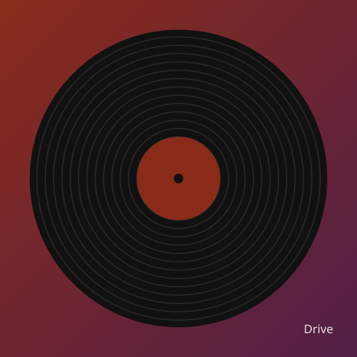

Caruso & Ruffo, "Sì, pel ciel marmoreo giuro!" (Verdi, *Otello*, Act II)

Recording: Victor 89075, matrix C-14272-1, New York, 8 Jan 1914; Verdi (1813–1901), libretto Arrigo Boito (1842–1918)
Background: Otello and Iago kneel and swear vengeance on heaven at the end of Act II, the opera's central revenge oath.
Why it's here: an explicit vow of retaliation; pre-1926; composition and libretto long out of copyright.